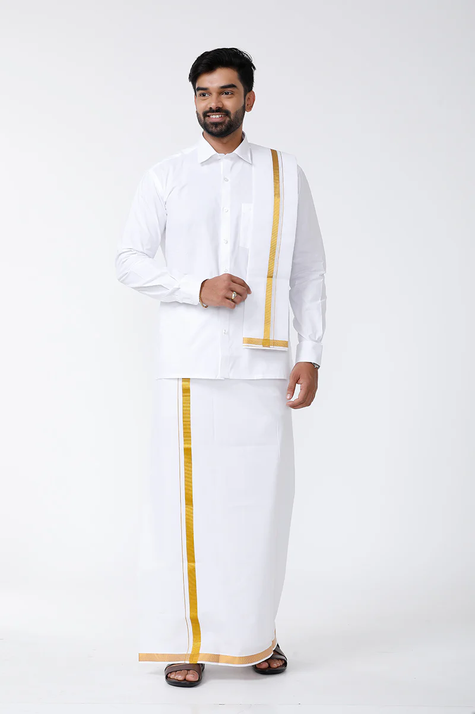

Veshti
Veshti are world-famous traditional attire worn by every South Indian man. However, the color and patterns differ from those of the northern states of India. In south India, the Veshtis are white or cream with golden borders and worn with shirts of any color. It can also be paired with a short kurta. The fabric used is mainly cotton to enable a comfortable feel. It is worn as casual attire and for different festive occasions.